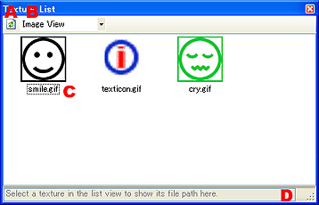
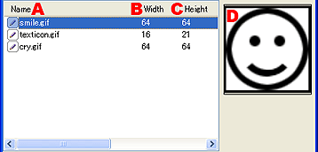

ページで使用している画像の一覧表示です。

ページで使用されている画像ファイルを最新状態にします。
ページで使用されている画像ファイルを一覧で表示します。
ページで使用されている画像ファイルの情報をリストで表示します。
ページ内で使用されている画像ファイルのサムネイルを表示。
選択した画像のフルパスで、どこにファイルがあるか表示します。

画像のファイル名を表示します。
画像の幅をdot数で表示します。
画像の高さをdot数で表示します。
選択した画像のサムネイルの表示領域です。